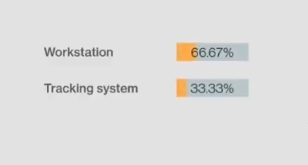
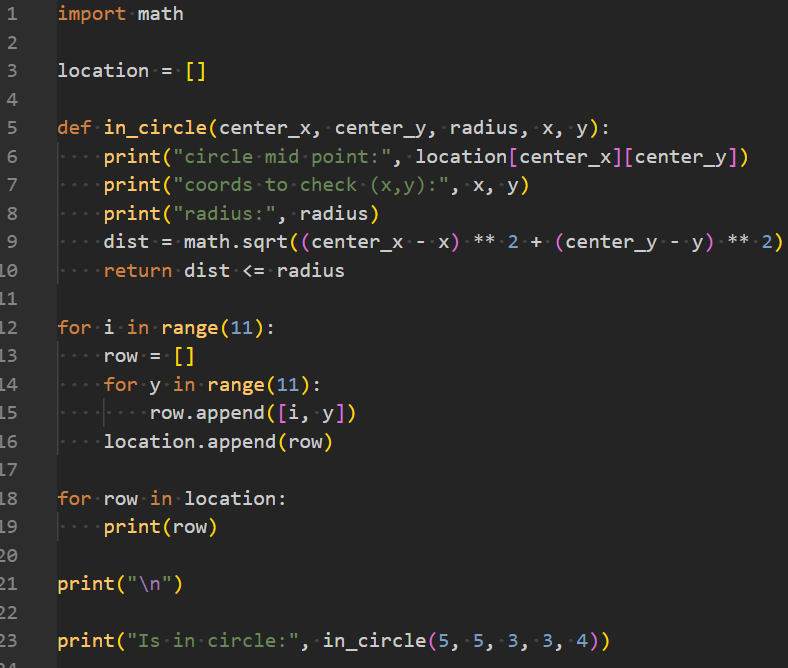
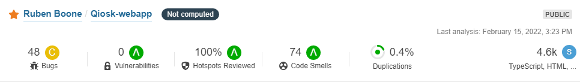

Qiosk is the name of the group that made this project real. Together with a team of 6 (3 application developer students, 1 internet of things student, 1 artificial intelligence student and a cloud and cybersecurity student) we got the challenge to create a project for the external company "Vanroey.be". The challenge was inside position tracking of a person in a room and track how long they stayed at a specific informational stand. The what and how was totally up to us.
At the start of the year, we got all the information we needed to start. The first step is figuring out what to do and how to do it. So we did a lot of research, communicated with the customer and made a lot of choices. At the end we decided to make an Angular web-application where visitors can book a visit with their company. On the same application, a place for the admin panel. As an extra, we planned to make a mobile app where you can see details about your visit. For the tracking, we decided to use ultra-wideband. All the collected Data would be visible trough Qlik sense dashboards. We would host our application (and that includes our database) on an Azure VM.
I helped make a lot of final decisions on the application development part. I started on the angular application, but at the end the Flutter app needed some more attention, so I transferred without any issues to the development of the app. There I made it possible to see the time divided at all the visited stands with a summary of progress bars. I fixed some bugs that were created when logging in. To finalize the app we added a functionality, so the admins could create a new stand dynamically using the app. To finish, I implemented Sonar cloud on all our Repositories so we had a good sight on code smells, bad code and security issues.

At some point, our IOT-specialist ran in some problems. We had no clue on how to detect if one of our visitor tags was inside a booth zone. I quickly jumped in and provided a Python script that helped him out. They changed the script to work better with the ultra-wideband. But the core to detect if the tag was in a zone still exists. The script used Pythagoras to see if the tag was in a circle radius.

Even though I'm not a specialist on the hosting part. I felt like I was pretty useful with our Cloud and cybersecurity student by communicating the things we need and are important for him to remind. Things went pretty smooth and were very clear to the both of us.
